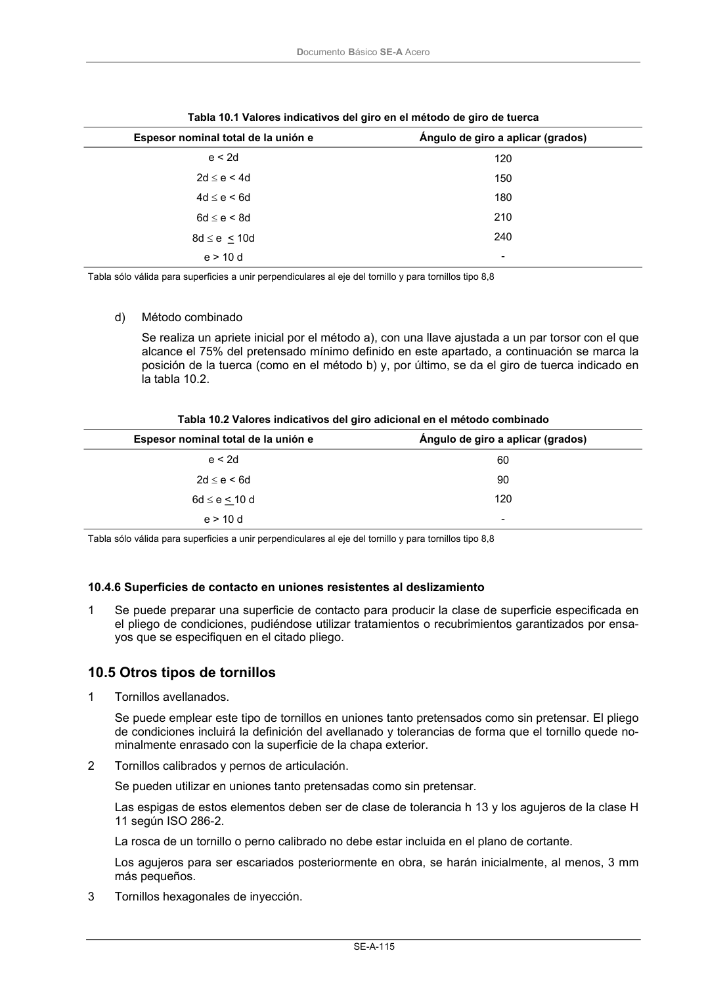

DB-SE-A · 10.4.6 Superficies de contacto en uniones resistentes al deslizamiento · versión 2007-10-23 · capa oficial
Formatos: JSON compacto · Markdown · PDF fuente
Ámbito del documento · texto del ámbito · documento y tablas
ID técnico a0175 · PDF pág. 117 · jerarquía no validada por persona · contrastado con el literal de la página 117 (candidato tipográfico); no validado por persona · padre: raíz
10.4.6 Superficies de contacto en uniones resistentes al deslizamiento 1 Se puede preparar una superficie de contacto para producir la clase de superficie especificada en el pliego de condiciones, pudiéndose utilizar tratamientos o recubrimientos garantizados por ensa- yos que se especifiquen en el citado pliego.

PDF fuente redistribuible: copia fiel enlazada en esta página (SHA256 verificado).